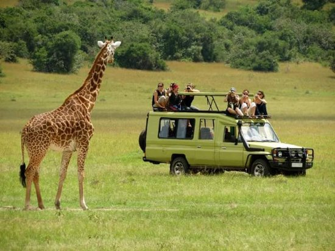
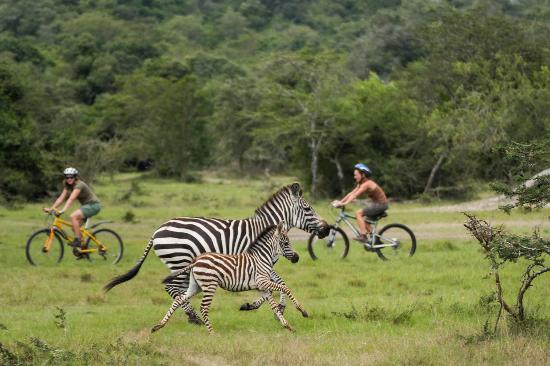
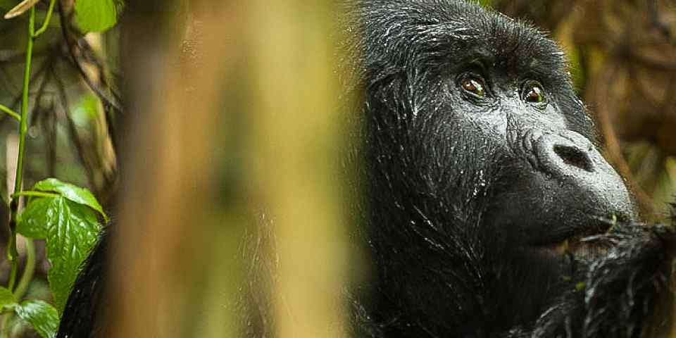

Based in East Africa, Nairobi stands tall as beacon for extraordinary safari experiences,
boasting a tapestry of diverse landscape and rich biodiversity.
Wondering what safari parks to visit in Uganda?
In this comprehensive guide, we will go deep into 10 best Kenyan safari parks,
showingcasing the wonders that make each of them a must for a visit.
SAFARI PARKS IN kenya TO visit
1Nairobi National Park.

Search Labs | AI Overview Learn more Nairobi National Park, a unique wildlife sanctuary, is located just south of Nairobi's city center, offering a rare juxtaposition of wildlife and urban scenery, and is the only national park within a capital city globally. Here's a more detailed look at Nairobi National Park: Key Features: Location: Situated approximately 7 kilometers (4.3 miles) south of Nairobi's city center. Uniqueness: It's the world's only national park within a capital city, allowing visitors to see wildlife against a backdrop of skyscrapers. Size: The park spans 117 square kilometers (45 square miles). Wildlife: It's home to a diverse array of wildlife, including lions, leopards, cheetahs, rhinos, giraffes, and over 400 bird species. Habitat: The park features diverse habitats, including open grass plains, savannah, and scattered acacia trees. History: It was established in 1946 as Kenya's first national park.
2. Tsavo National Park.
Tsavo National Park, Kenya's largest, is divided into Tsavo East and Tsavo West, offering diverse wildlife viewing and landscapes, including the Yatta Plateau, Mzima Springs, and the famous red elephants, and is known for its "land of lava, springs, and man-eaters". Here's a more detailed look at Tsavo National Park: Location and Size: Tsavo National Park is located in southeastern Kenya, east of Mount Kilimanjaro. It's divided into Tsavo East and Tsavo West, separated by the Nairobi-Mombasa highway and railway line. Tsavo National Park is one of the largest national parks in Kenya and one of the largest in the world. It covers an area of 20,812 square kilometers (8,036 square miles). Tsavo East is the larger of the two parks, covering 13,747 square kilometers.
3.Maasai Mara
_National_Park_

sai Mara National Reserve is located in south west Kenya and is a vast scenic expanse of gently rolling African savannah plains measuring 1510 square kilometers in area and bordering the Serengeti National Park in Tanzania to the south. Masai Mara is a unique wildlife conservation haven famous for its spectacular natural diversity of wildlife and is the premier Kenya Safari location in East Africa, offering visitors numerous reasons to visit this animal paradise. Large numbers of Lions, Cheetah, Elephant, Rhino, African Buffalo, Wildebeest, Giraffe, Zebra and many more animals are found in the park in their natural habitat, unconfined and free to roam the vast Kenyan wilderness stretching for miles on end. It is no surprise that tourists from the world over travel here to experience a Masai Mara Safari tour, more so as the reserve has been voted one of the new Seven Wonders of the World. Regarding the origin of the name, the word 'Masai' comes from the Maasai tribe, nomadic inhabitants of the area and the word 'Mara' is their word for 'spotted', referring to the ubiquitous flat topped acacia trees, shrubs and bushes that dot the landscape across most of the reserve.
4. Kidepo valley National Park

For those seeking an off the beaten path adventure, Kidepo valley National Park
is a hide gem in the northerneast of Uganda. The Park's rugged landscape and expansive savannah are
home to avariety of wildlife, including lions, cheatens and ostriches The sense of isolation adds to the
allure, making it perfect destination for those yearning for a more exclusive Safari experience. The Narsus Valley
dotted with acacia trees, is a prime spot for game viewing.
5. Lake Mburo Natinal parks

lake Mburo Natinal Park is a compact yet diverse Safari destination. The park's centerpiece, mburo
provides a picturesque backdrop for game drives and boat trips. Zebra and impala are abundant, and the
park is a birdwatcher's delight with over 300 bird species. For a unique experience, embark on
on a guided horseback safari to get closer to the wildlife without disturbing their natural behavior.
6 Kibale National Park

Also known as the primate capital of the world, Kibale National-Park is home for
chimpanzee enthusiasts. The lush rainforest is home to not only chimpanzee but also othe primates like red colobus
monkeys, and grey- checked mangabeys. Embark on a guided chimpanzee trek to witness these intelligent creatures
in the their natural habitat .The Park's diverseflora and fauna axtend beyond primates, with a myriad of bird
species adding to the enhantment.
7. Semuliki National Park

Semuliki Natinal Park, a paradise for birdeatchers and natural lovers. The park's hotsprings.
fed by the Semuliki River, create a unique landscape. Explore the park's diverse habitats, from lowland rainforest
to savannah, and encounter wildlife such as forest elephants, and pygmy hippotamuses.The park's isolation
adds to its charm, offering tranquil and immersive safari experience.
8. Rwenzori mountains National-Park

For adventure seeking a different kind of safari experience Rwenzori mountains
is a dream destination. Home to the fabled mountains of the moon, this park boasts snow capped peaks.glaciers
and challenging hiking trails. While the wildlife is not as a bundant as in the other parks, the unique flora
including giant lobelias and groundsels, and the stunning landscape make it a must visit for avid hikers
and nature enthusiasts.
9. Mt Elgon National Park

Mount Elgon Nationa is bordering Uganda and Kenya, is a palce for hikers. The park's centerpiece is Mount Elgon
an extinct volcano with the largest surface area of any extinct volcano in the world. The Sipi Falls
a series of three water falls on the mountain's slope, adds to the park's natural allure. Hike to
caldera or explore the extensive cave systems for a more active and immersive Safari experience.
10- Mgahinga gorilla National-Park

Mgahinga National-Park, is nestled in the Virunga mountains. The park is vital habitat for th rare and endangeredmountain gorillas. Explore diverse landscape of Mount Mgahinga and mount Muhavura.
QUESTIONS ASKED
What makes Uganda Safari Parks unique compared to other African Safari parks.
Uganda Safari parks are unique for their incredible biodiversity and varied landscapes ranging from dense tropical forest
to vast Savannahs. What sets them a part is the opportunity to witness the iconic mountain gorillas in their natural
habitat, as well as the chance to explore lesser-known, off-the beaten path parks like Kidepo valley and
Semuliki, providing a more exclusive and diverse Safari experience
How does gorilla trekking contribute to the allure of Uganda's Safari parks?
Gorilla trekking is a highlight of Uganda's safari experience, especically in Bwindi Bwindi_Impenetrable_National_Park_
and Mgahinga Gorilla National-Parks
This activity allows visitors to enjoy guided trek through lush forests,immersing themselves in the natural habitat of
mountain gorillas. its rare and intimate encounter that fosters coversation awareness,as permit fees contribute to
the protection of these endangered species and their habitats
What role does conservation play in Uganda's Safari parks
conservation is paramount aspect of Uganda's Approach to managing Safari parks. The country has implemented
various conservation programs and sustainable tourism practices to protect its diverse flora and fauna.
Community engagement and education are integral to these efforts, ensuring that local communities benefits from
tourism while actively participating in wildlife conservation.